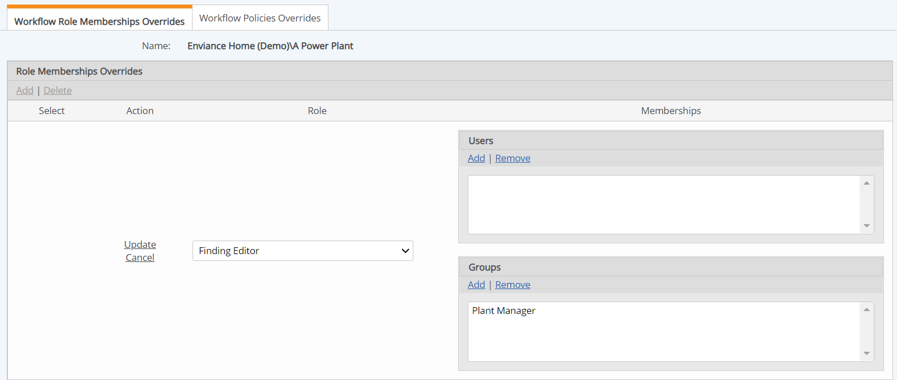

Role memberships define the default assignees for the various Roles defined in a workflow type. The default Role memberships defined in the workflow type can be overridden for workflows associated with a specific system model object (and by inheritance its children).
For example, an Incident workflow uses the role Supervisor, whose default member as defined in the workflow type is the Plant Supervisor. However, in Facility X, the Environmental Manager typically oversees this type of workflow. You can change the default role memberships for Facility X with a workflow override.
The role members specified in the Workflow Override will be used for step assignments for all workflow instances associated with that object, unless a user who has Assign permission chooses to select another system user. Permissions for each Role are defined in the Workflow Type.
Facility-specific Groups for each Role are commonly used for Workflow Overrides. A special case must be kept in mind if it is expected that two or more Facilities could be associated with a single workflow. In this case, the role membership is dictated by the union of Role Memberships (i.e., users or groups that are role members for all selected objects), looking at Users and Groups independently. To resolve the role members, the system looks for User-User and Group-Group matches, and does not look for Users in Group. This case can be dealt with either by creating a special Group for this scenario, or by granting Assign permission to the Role so that users can select an assignee from the general user base.
The Incident App uses a configuration where a workflow is typically associated with two objects: A Facility and an Employee (selected from an Employee library). This setup requires special consideration. See the IncidentApp help for more information.
To override the default role memberships for object-related workflows:

If you change the role memberships for any role, the new role memberships will apply to all new workflow instances using that Role.